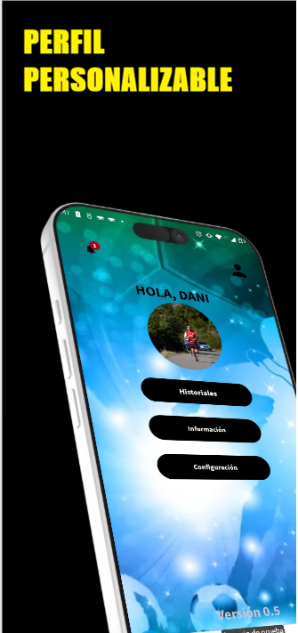
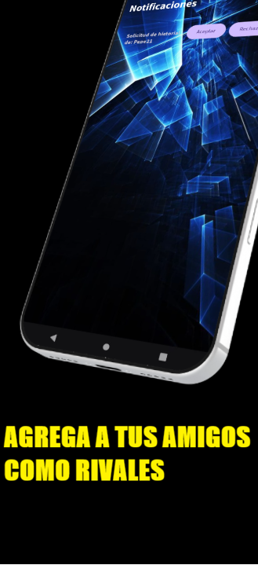
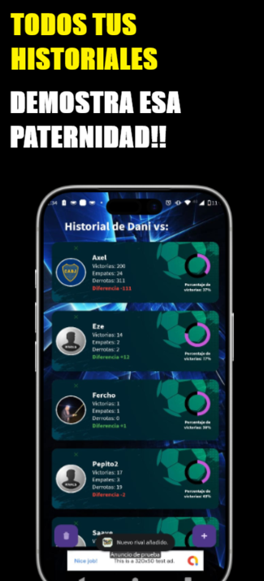
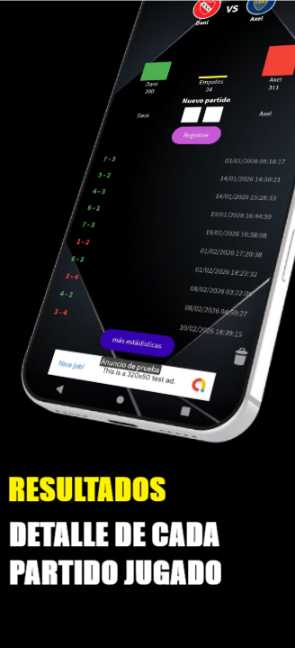
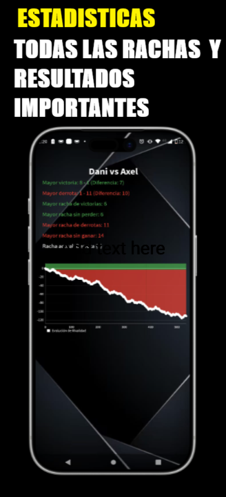

Rival Score
Rival Score es la app ideal para crear historiales entre amigos y registrar partidos de manera fácil.
- Agregá a tus rivales y cada vez que cargues un resultado, ellos reciben una notificación inmediata.
- El historial se actualiza en tiempo real y muestra quién domina la rivalidad.
- Las estadísticas destacan las mayores rachas de victorias, derrotas, invictos y las goleadas más recordadas.
- Podés sacar a relucir esa “paternidad” deportiva con datos claros y divertidos.
- Si preferís un control personal, también podés crear un historial local que solo vos ves y administrás, sin necesidad de registrarte.




